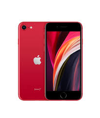
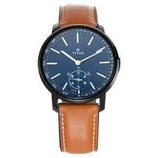

CASE STUDY BETWEEN GOOGLE LENS AND MOBILENET
VS

output on Google Lens : TV Remote
output on MOBILENET : Modem Router

output on Google Lens : Phone
output on MOBILENET : Phone
output on Google Lens : Bottle
output on MOBILENET : Jug

output on Google Lens : Watch
output on MOBILENET : Wall Clock
By "processing" these "results" we get to know that Google Lens is more accurate than Mobilenet lol.